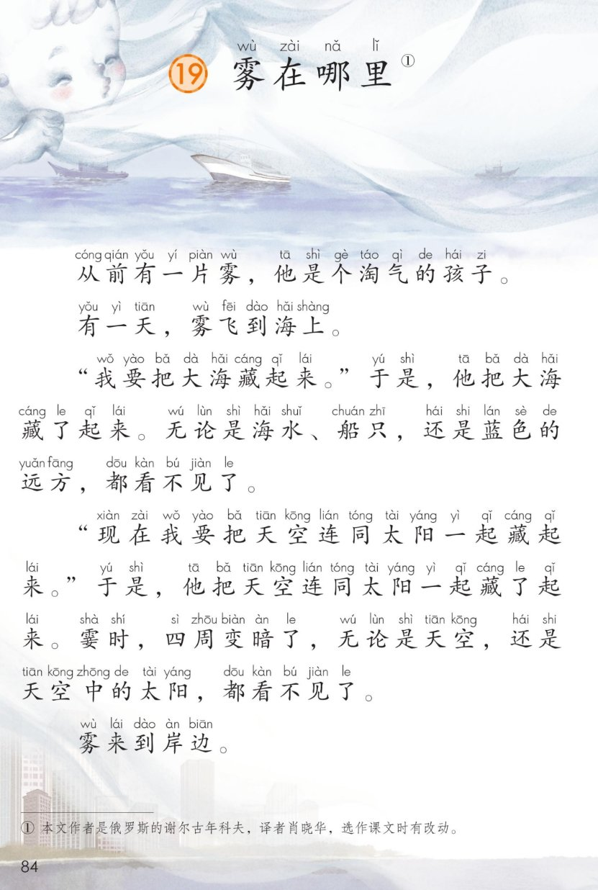
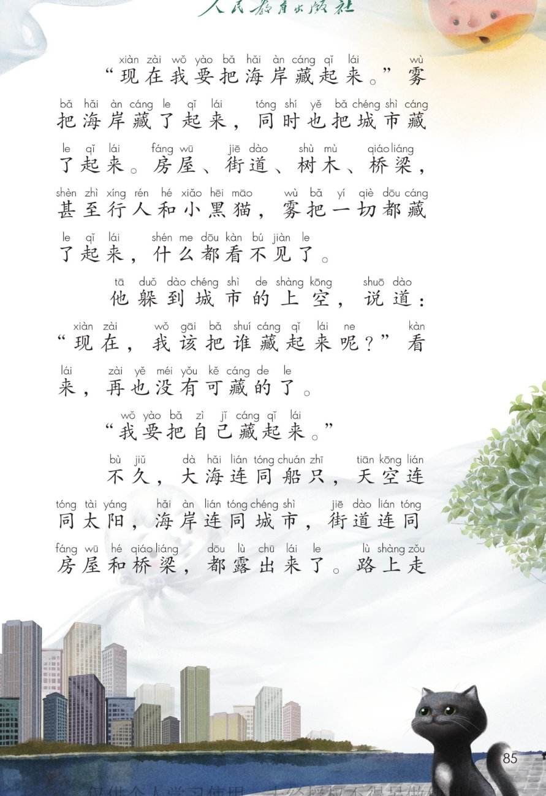
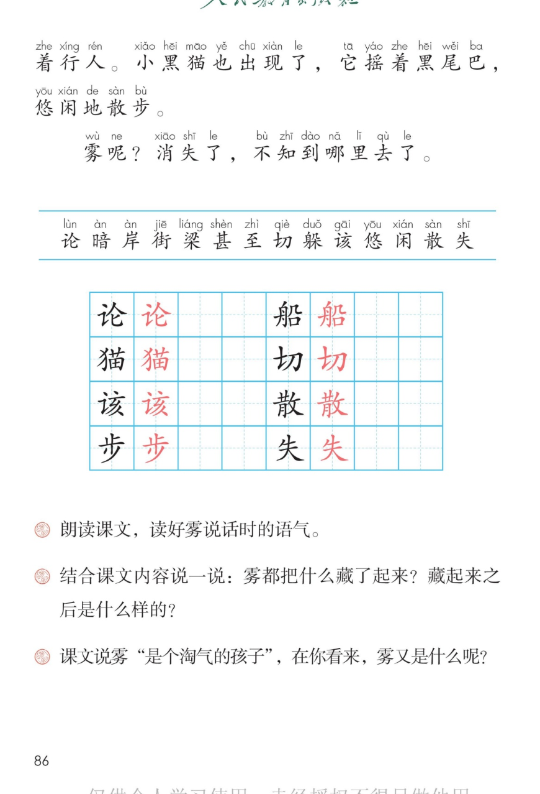

🌫 第 19 课《雾在哪里》· 有声图文带读
统编版语文 · 第七单元·阅读 · 课本 第 84~86 页 · 本文作者是俄罗斯的谢尔古年科夫，译者肖晓华，选作课文时有改动
课文 10 个自然段
会认字 14
会写字 8
听写词 10
近义词 4 组
深入理解 8 题
本课本领 读好雾说的话
🎧 五步学（可随时点任意一句、一个字、一个词单独听）：
① 听读课文——一句一句读，读到哪一句哪一句发光；开「跟读」后读完一句留时间让你自己读。
② 学字词——14 个会认字、8 个会写字（含书写提示），点一个读一个。
③ 词语·听写·造句——先听"课文里的词"，再听写 10 个词（读两遍→你写→报答案→听示范句），最后听 4 组近义词辨析。
④ 深入理解——8 道题（认知 / 理解 / 运用 / 拓展），开放题答案不唯一，先想后看。
⑤ 说顺序·分角色——先说清雾把什么藏了起来，再分角色读旁白和雾说的话。
① 听读课文（点哪一句，读哪一句）点段前的 ①②③ 听整段
注音只标本课要认、要写的字，读音来自课本第 3 页生字表
🎤 朗读要求（老师标准）
① 读准字音，不添字、不漏字、不回读；
② 逗号稍停，句号停得长一点；
③ 问句读出问的语气（句末往上扬）；
④ 雾说的话要读出淘气的语气，像小孩子在玩藏猫猫；
⑤ “霎时”“悠闲地”要读得慢一点，读出雾来了和雾散了的样子。
①从前有一片雾，他是个淘气的孩子。
②有一天，雾飞到海上。
③“我要把大海藏起来。”于是，他把大海藏了起来。无论是海水、船只，还是蓝色的远方，都看不见了。
④“现在我要把天空连同太阳一起藏起来。”于是，他把天空连同太阳一起藏了起来。霎时，四周变暗了，无论是天空，还是天空中的太阳，都看不见了。
⑤雾来到岸边。
⑥“现在我要把海岸藏起来。”雾把海岸藏了起来，同时也把城市藏了起来。房屋、街道、树木、桥梁，甚至行人和小黑猫，雾把一切都藏了起来，什么都看不见了。
⑦他躲到城市的上空，说道：“现在，我该把谁藏起来呢？”看来，再也没有可藏的了。
⑧“我要把自己藏起来。”
⑨不久，大海连同船只，天空连同太阳，海岸连同城市，街道连同房屋和桥梁，都露出来了。路上走着行人。小黑猫也出现了，它摇着黑尾巴，悠闲地散步。
⑩雾呢？消失了，不知到哪里去了。
课本的样子（点一张图，听读这一页）点一张图，听读整页

第 84 页 · 课题与课文前五段

第 85 页 · 城市插图与课文后半

第 86 页 · 生字表与课后题
📖 人教版《语文》二年级上册 · 课本第 84~86 页 · 图片仅供个人学习，版权归人民教育出版社所有
② 会认字（14 个）点一个字，听读音、词语和课文里的句子
② 会写字（8 个）结构、部首、笔画与书写提示为通用规范，供参考，以教材和老师的指导为准
论
lùn
无论 · 讨论
6 画 · 左右（讠）
左窄右宽，讠的提要短
船
chuán
船只 · 小船
11 画 · 左右（舟）
舟旁横变提，不出头
猫
māo
小猫 · 黑猫
11 画 · 左右（犭）
反犬旁弯一些，草头盖住
切
qiè
一切 · 亲切
4 画 · 左右（刀）
左宽右窄，折钩要有力
该
gāi
应该 · 该谁
8 画 · 左右（讠）
左窄右宽，亥的撇要分开
散
sàn
散步 · 散会
12 画 · 左右（攵）
左右相当，捺要舒展
步
bù
散步 · 脚步
7 画 · 上下（止）
上小下大，末撇舒展
失
shī
消失 · 失去
5 画 · 独体
首撇要短，末捺舒展
③ 课文里的词（点一行，听读这一组）本课课后题没有「读一读，记一记」，改为读课文里的四个字
藏藏起来 躲藏 藏书 冷藏
霎霎时 一霎 霎时间
至甚至 至今 至少 冬至
闲悠闲 清闲 闲话 空闲
③ 听写（10 个词）读两遍 → 你在纸上写 → 报答案 → 听示范句
准备听写 · 共 10 个词
○ ○ ○
点下面的「开始听写」，听到一个词就写一个词。
③ 听写的词 · 造句示范点词听读，点句子听示范句，再自己说一句
1无论会写字
示范句：无论是海水、船只，还是蓝色的远方，都看不见了。
✏️ 我也能说：无论 + 还是 + 都
2讨论会写字
示范句：同学们一起讨论这道题怎么做。
✏️ 我也能说：谁 + 和谁 + 讨论什么
3船只会写字
示范句：海面上有许多船只。
✏️ 我也能说：哪里 + 有多少船只
4小猫会写字
示范句：小黑猫摇着黑尾巴，悠闲地散步。
✏️ 我也能说：谁家的小猫 + 在做什么
5一切会写字
示范句：雾把一切都藏了起来。
✏️ 我也能说：谁 + 把一切 + 怎么样
6应该会写字
示范句：天冷了，应该多穿一件衣服。
✏️ 我也能说：什么时候 + 应该 + 做什么
7散步会写字
示范句：小黑猫悠闲地散步。
✏️ 我也能说：谁 + 在哪里 + 散步
8消失会写字
示范句：雾消失了，太阳出来了。
✏️ 我也能说：什么 + 消失了
9海岸课文词语
示范句：雾把海岸藏了起来。
✏️ 我也能说：海岸上 + 有什么
10街道课文词语
示范句：雾把街道也藏了起来。
✏️ 我也能说：街道上 + 有什么
③ 近义词辨析（4 组）相同点 / 不一样在哪 / 各造一句
淘气 — 顽皮
相同：都是爱玩爱闹、不听话。
不一样：淘气多形容小孩子，带点喜欢的味道；顽皮更强调不听话、爱捣乱。
淘气：弟弟很淘气，把玩具摆了一地。
顽皮：这只小猴子真顽皮，抢走了游客的帽子。
霎时 — 立刻
相同：都是说时间很短。
不一样：霎时只指一眨眼那么短，多写景；立刻是马上就做，多写人的动作。
霎时：霎时，天上乌云密布。
立刻：听到铃声，他立刻站了起来。
悠闲 — 自在
相同：都是说不着急、很舒服。
不一样：悠闲多写慢慢做事、不忙；自在是心里没有拘束，想怎样就怎样。
悠闲：小猫悠闲地趴在门口晒太阳。
自在：星期天在家里，我觉得很自在。
消失 — 不见
相同：都是说看不到了。
不一样：消失是渐渐没有了，可能再也不回来；不见只是眼前看不到，东西可能还在别处。
消失：太阳一出来，雾就消失了。
不见：我的橡皮不见了，原来在书包里。
③ 词语拓展（说一说，记一记）
无论…还是…都无论是海水、船只，还是蓝色的远方，都看不见了。
连同天空连同太阳 海岸连同城市 街道连同房屋和桥梁
表示时间短霎时 一会儿 转眼间 刹那间
写雾的词大雾弥漫 雾气蒙蒙 白茫茫 雾消云散
④ 深入理解（8 题 · 先想后看）标「答案不唯一」的题，说得有道理都对
认知课文里的雾是个什么样的孩子？用课文里的一个词来说。
看解析
🤔 想一想
解析：
淘气就是爱玩、爱闹、坐不住，像小朋友在玩藏猫猫。课文第二段写它飞到海上，后面又一处一处地藏东西，正是淘气的样子。
💡 读一篇课文，先找总起句，后面的内容常常就是围着这句写的
认知雾先后把什么藏了起来？按课文的顺序说一说。
看解析
🤔 想一想
解析：
课文分三处写：海上藏大海、藏天空和太阳；岸边藏海岸、藏城市；最后躲到城市上空，把自己藏起来。一处比一处藏得多。
💡 找顺序，注意于是、现在、不久这些词，它们是路标
理解无论是海水、船只，还是蓝色的远方，都看不见了。为什么连远远的蓝色远方也看不见了？
看解析
🤔 想一想
解析：
雾不是只挡住一样东西，它是把一大片地方全包在里面。
所以读到无论……还是……都……，就知道是在说全部，一个也没漏。
💡 看到无论还是都，就知道全都在里面了
理解写雾藏城市的时候，为什么还要说甚至行人和小黑猫？
看解析
🤔 想一想
解析：
前面的四样是大的，后面两样是小的；甚至把更小、更想不到的也说了出来。
删掉甚至，句子也通，可就没有这么有力了——这就是甚至的作用。
💡 甚至常用来把更小、更少、更想不到的也说出来
理解雾把自己藏起来以后，为什么一切都露出来了？
看解析
🤔 想一想
解析：
这句话告诉我们：雾不是把东西搬走了，只是挡在前面；雾一走，东西还在原处。
结尾的雾呢？消失了，和开头的淘气正好对上：玩了一场藏猫猫，最后把自己藏没了。
💡 读懂结尾，要回头想想前面：雾靠什么藏东西？靠它自己
运用用无论……还是……都……说一句话。
看解析
🤔 想一想
解析：
写人：无论是严寒还是酷暑，清洁工都早早来扫街。
写物：无论是大树还是小草，都离不开阳光和水。
💡 先把两样东西放进无论还是中间，再说什么都怎样
🌈 答案不唯一，句子通顺、前后对得上就算对
运用课文说雾是个淘气的孩子，在你看来，雾又是什么呢？说说你的想法。
看解析
🤔 想一想
解析：
比作东西：雾像一床大被子、一块大纱巾、一层白纱。
比作人：雾像会变魔术的人、爱玩藏猫猫的孩子、给城市洗澡的人。
💡 先说像什么，再说为什么像——两句话就完整了
🌈 答案不唯一，能说出像什么、为什么像，就是好句子
拓展起大雾的时候出门，要注意什么？说两三条。
看解析
🤔 想一想
解析：
看路：走人行道，过马路左右看，不跑不闹。
防护：戴口罩，少在雾里待太久；回家洗手洗脸。
💡 每条说清做什么 + 为什么，两三条就够
🌈 答案不唯一，说清做什么、为什么就是完整的一段话
⑤ 按顺序说雾藏了什么（课后题：雾都把什么藏了起来）点一张卡，听这一步
💬 说的支架：先说在哪儿（海上 / 岸边 / 城市上空）→ 再说藏了什么（大海、天空和太阳、海岸和城市）→ 最后说结果（都看不见了 → 都露出来了）。课后题问"藏起来之后是什么样的"，就答"什么都看不见了"。
⑤ 分角色朗读（课后题：读好雾说话的语气）点一张卡，听这一段怎么读
📖 旁白·开头
从前有一片雾，他是个淘气的孩子。
有一天，雾飞到海上。
💬 要读得慢一点、清楚，像讲故事的开头
🌫 雾·藏大海
“我要把大海藏起来。”
于是，他把大海藏了起来。
无论是海水、船只，还是蓝色的远方，都看不见了。
💬 雾说的话要读出得意、淘气的语气
🌫 雾·藏天空和太阳
“现在我要把天空连同太阳一起藏起来。”
于是，他把天空连同太阳一起藏了起来。
霎时，四周变暗了……
💬 连同要读得连贯，一口气读下来
📖 旁白·岸边
雾来到岸边。
“现在我要把海岸藏起来。”
房屋、街道、树木、桥梁，甚至行人和小黑猫……
💬 四个词用顿号，一个一个读清楚；甚至要读重
🌫 雾·想不出可藏的
他躲到城市的上空，说道：“现在，我该把谁藏起来呢？”
看来，再也没有可藏的了。
“我要把自己藏起来。”
💬 问句往上扬，读出发愁的样子；最后一句又轻又神秘
📖 旁白·结尾
不久，大海连同船只，天空连同太阳……都露出来了。
小黑猫也出现了，它摇着黑尾巴，悠闲地散步。
雾呢？消失了，不知到哪里去了。
💬 悠闲地散步要读得慢、读得轻松；最后一句读得轻